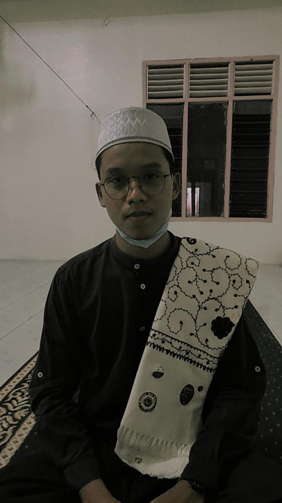

|  | ||
| Full Name | : | Muhammad Jamil |
| Panggil saja | : | Jamil . . ^-^ |
| NIM | : | A11.2020.12567 |
| TTL | : | Kotawaringin, 15 Nopember 2001 |
| Dosen Wali | : | Muhammad Syaifur Rohman, M.CS |
| Alamat | : | Kotawaringin Barat |
| Agama | : | Islam |
| : | 111202012567@mhs.dinus.ac.id | |
| Nama Univ | : | Universitas Dian Nuswantoro |
Video ini MilikTik-Tok Muhammad Jamil.
by Ustad Hanan Attaki {Audio}
Allah memberikan kasih sayangnya terhadap hambanya yang serius ingin memperbaiki diri. Allah SWT berfirman :
QS. Az-Zumar Ayat 53
۞ قُلْ يٰعِبَادِيَ الَّذِيْنَ اَسْرَفُوْا عَلٰٓى اَنْفُسِهِمْ لَا تَقْنَطُوْا مِنْ رَّحْمَةِ ا<للّٰهِ ۗاِنَّ اللّٰهَ يَغْفِرُ الذُّنُوْبَ جَمِيْعًا ۗاِنَّهٗ هُوَ الْغَفُوْرُ الرَّحِيْمُ .
Artinya :
Katakanlah, “Wahai hamba-hamba-Ku yang melampaui batas terhadap diri mereka sendiri! Janganlah kamu berputus asa dari rahmat Allah. Sesungguhnya Allah mengampuni dosa-dosa semuanya. Sungguh, Dialah Yang Maha Pengampun, Maha Penyayang.
QS. Az-Zumar Ayat 54
۞ اَنِيْبُوْٓا اِلٰى رَبِّكُمْ وَاَسْلِمُوْا لَهٗ مِنْ قَبْلِ اَنْ يَّأْتِيَكُمُ الْعَذَابُ ثُمَّ لَا تُنْصَرُوْنَ
Artinya :
Dan kembalilah kamu kepada Tuhanmu, dan berserah dirilah kepada-Nya sebelum datang azab kepadamu, kemudian kamu tidak dapat ditolong.
Lihatlah bagaimana Allah SWT justru mengundang orang-orang yang berbuat dosa untuk datang kepada-Nya. Allah SWT membuka pintu maaf seluas-luasnya bagi orang yang ingin kembali. Hal ini berbeda 180 derajat jika kita berbuat kesalahan kepada manusia. Bertemu dengan orang tersebut saja kita merasa malu. Tapi, apa jadinya jika kita berbuat kesalahan, tapi justru disambut dengan hangat oleh orang tersebut?
Begitulah Allah SWT memperlakukan hamba-Nya.Tak ada kata terlambat untuk memperbaiki diri. Toh, setiap kita yang tampak alim sekali pun pasti tak luput dari setiap dosa-dosa yang terus mengintai. Datanglah kepada Allah dan pasti Allah akan menerima tobat kita. "Dan, barang siapa yang bertobat dan beramal saleh maka sesungguhnya Allah akan menerima tobatnya." (QS al-Furqaan [25]: 71)
WONDERLAND INDNESIA by Alffy Rev (Ft.Novia Bachmid) - Youtube.
Masih dalam kemeriahan perayaan Hari Kemerdekaan Indonesia. Alffy Rev kembali membuat karya menakjubkan dengan judul "Wonderland Indonesia" pada Selasa (17/08/2021) pukul 19.45 WIB.
Karya tersebut tayang di platform Youtube dengan menggaet Novia Bachmid sebagai penyanyi. Video tersebut menjadi buah perbincangan warga Net Twitter hingga masuk 10 tren teratas di Indonesia hingga kini.
Video Wonderland Indonesia memiliki durasi 10 menit 52 detik serta merangkum keragaman Indonesia dengan lantunan sembilan lagu daerah dan satu lagu nasional. Tidak ketinggalan, naskah proklamasi juga turut dikumandangkan dengan iringan musik band
Berbagai pakaian tradisional dengan variasi latar dengan konsep visualisasi modern, Alffy mengungkapkan pada postingan instagram @alffy_rev. "Kawan-kawan! Percayalah, karya istimewa ini akan membawa Indonesia to the next level. Mohon sinerginya untuk menyuarakan segala energi dari karya ini," ungkapnya pada Senin (16/08/2021).
| NO | Kode Mata Kuliah | Kelompok | Matakuliah | SKS | Status | 1. | A11.54302 | A11.4302 | MATEMATIKA DISKRIT | 3 | B | 2. | A11.54303 | A11.4318 | MATRIKS & RUANG VEKTOR | 3 | B | 3. | A11.54306 | A11.4302 | STRUKTUR DATA | 4 | B | 4. | A11.54314 | A11.4302 | PEMROGRAMAN BERBASIS WEB | 2 | B | 5. | A11.54403 | A11.4304 | ORGANISASI DAN ARSITEKTUR KOMPUTER | 3 | B | 6. | A11.54501 | A11.4507 | JARINGAN KOMPUTER | 3 | B | 7. | A11.54608 | A11.4504 | PEMROGRAMAN PERANGKAT BERGERAK | 3 | B | 8. | N201706 | n602 | PENDIDIKAN KEWARGANEGARAAN | 2 | B |
|---|